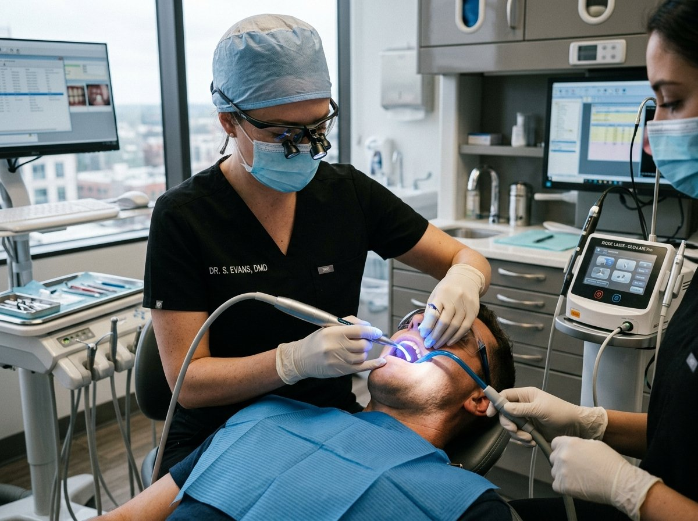

Protect your teeth at the foundation with evidence-based surgical and non-surgical gum therapies.

Periodontal tissues (the gums, periodontal ligaments, and alveolar bone) form the biological foundation supporting your teeth. Bacterial plaque accumulation, untreated gingivitis, and genetic predisposition can lead to periodontitis—destroying the jawbone, causing deep pockets, persistent bad breath, bleeding gums, and eventual tooth mobility.
At Shri Krishna Dental Hospital, our clinical approach combines precision diagnostics, ultrasonic prophylaxis, laser disinfection, and microsurgical bone regeneration to halt disease progression and preserve your natural dentition.
From preventive scaling to advanced regenerative flap surgery, each treatment is performed under strict sterilization standards.
Complete scaling and polishing of both upper and lower jaws using ultrasonic scalers. Gently eliminates hard calculus, tartar, and extrinsic tobacco/coffee stains to restore gum health.
Preventive & MaintenanceTargeted surgical treatment of a single quadrant with deep periodontal pockets (>5mm). Gums are gently folded back to decontaminate diseased root surfaces and eliminate chronic infection.
Surgical Pocket ReductionComprehensive full-mouth periodontal debridement for generalized chronic periodontitis. Arrests progressive bone resorption and restores periodontal stability across all arches.
Advanced PeriodonticsPlacement of natural or bio-engineered bone particulate matrices into vertical bone defects. Stimulates new bone formation around loose teeth and strengthens anchorage.
Bone RegenerationGentle scraping and decontamination of the chronically inflamed inner soft tissue lining of deep periodontal pockets in isolated regions, stimulating healthy tissue adhesion.
Targeted DecontaminationMeticulous smoothing of infected root surfaces to remove embedded bacterial endotoxins. Creates an ultra-smooth root surface where healthy gingival fibers can readily reattach.
Deep Cleaning TherapySurgical recontouring of gum and bone margins to expose more sound tooth structure. Essential prior to crown capping for fractured teeth and for treating uneven gummy smiles.
Aesthetic & RestorativePrecise excision of the painful, swollen gum flap covering a partially erupted wisdom tooth (pericoronitis). Relieves acute chewing pain, jaw lock, and recurrent infections.
Pericoronitis ReliefSurgical deepening of the oral vestibular sulcus. Improves the retention and stability of complete or partial dentures while enhancing hygiene access around natural teeth.
Pre-Prosthetic SurgeryGum disease often advances silently without significant pain in its early stages. Schedule an examination if you experience:
Get an accurate digital evaluation with RVG radiographs and gentle clinical pocket probing by our experienced team.
Book Periodontal Visit Call +91 95154 25522